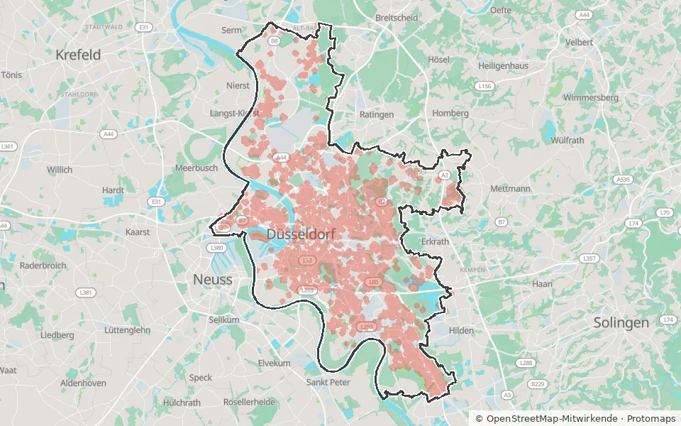
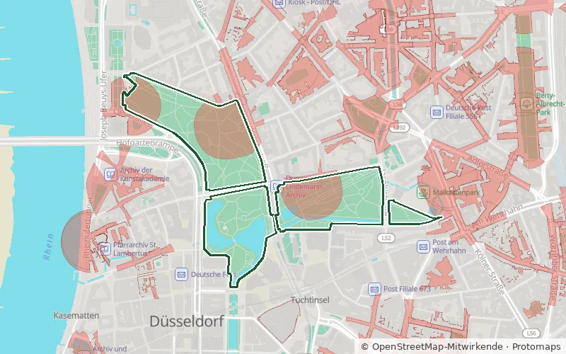
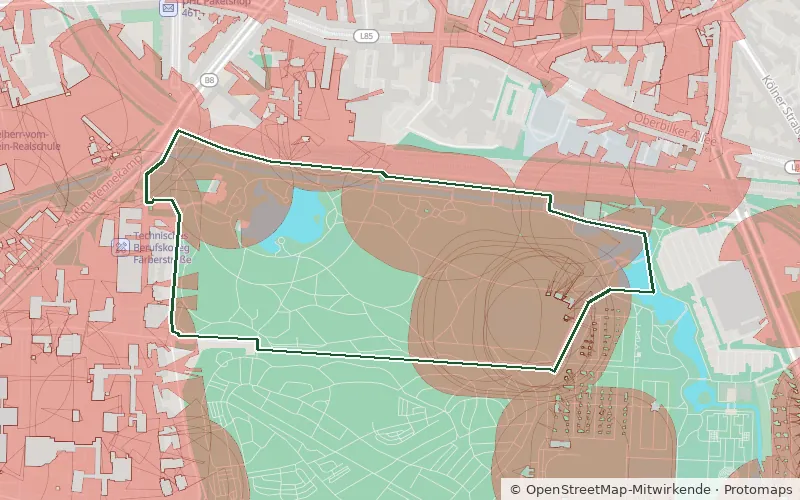
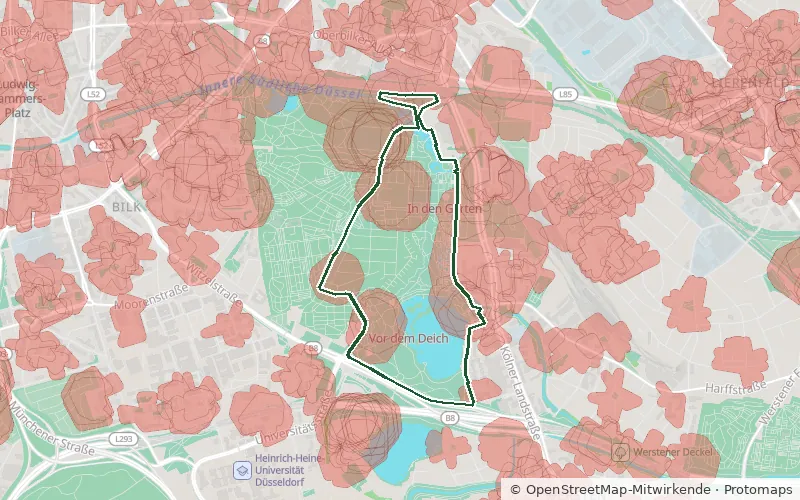
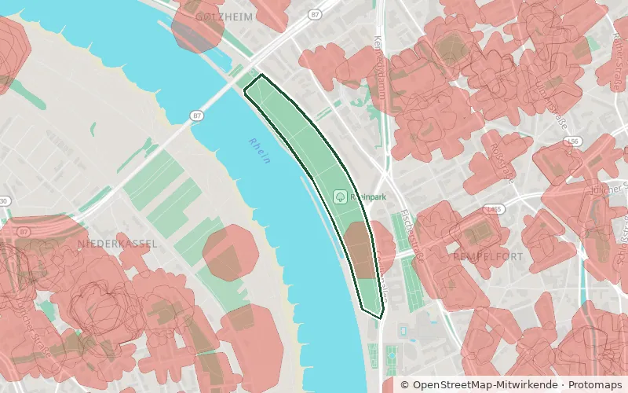
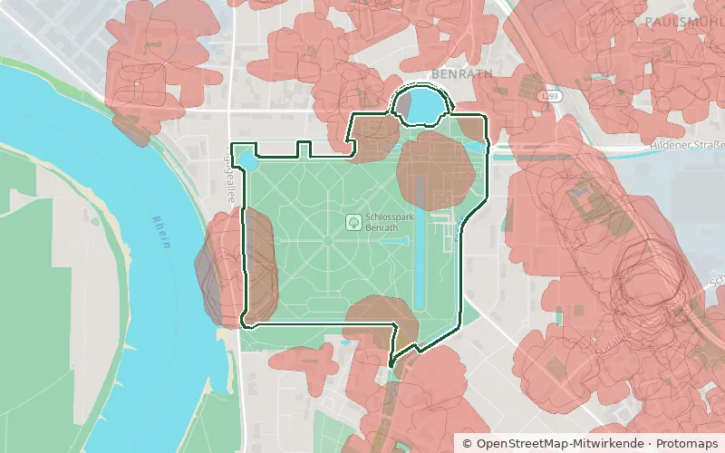
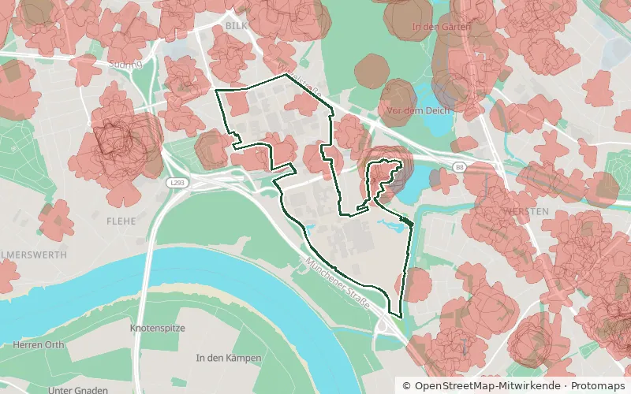

In Düsseldorf ist öffentliches Kiffen auf 40 km² verboten, das sind 18,5 % der Stadtfläche von 217 km². Grund sind 2 729 Einrichtungen, in deren Sichtweite nach § 5 KCanG nicht konsumiert werden darf, vor allem Sportstätten und Spielplätze. Sichtweite heißt: höchstens 100 Meter vom Eingangsbereich, und nur dort, wo kein Gebäude die Sicht verdeckt. Dazu kommen die Fußgängerzonen der Innenstadt, in denen zwischen 7 und 20 Uhr nicht konsumiert werden darf, und überall die unmittelbare Gegenwart von Kindern und Jugendlichen.

Woher die Zonen kommen
| Einrichtung | Anzahl | Zonenfläche |
|---|---|---|
| Schulen | 205 | 8,9 km² |
| Kitas und Kindergärten | 345 | 6,9 km² |
| Kindertagespflege | 35 | 0,6 km² |
| Spielplätze | 906 | 14,4 km² |
| Kinder- und Jugendeinrichtungen | 45 | 0,9 km² |
| Sportstätten | 1 193 | 20,8 km² |
Die Spalte rechts zählt jede Art für sich; weil sich Zonen verschiedener Einrichtungen überlappen, ist ihre Summe größer als die 40 km² oben. Den größten Teil machen die 1 193 Sportstätten aus, von Fußballplätzen über Turnhallen bis zu Fitnessstudios, gefolgt von 906 Spielplätzen.
Anbauvereinigungen fehlen in der Tabelle. Laut der Liste des Deutschen Hanfverbands (Stand April 2026) hat Düsseldorf drei genehmigte Vereine; wo sie anbauen und abgeben, ist nicht öffentlich und in OpenStreetMap nicht eingetragen. Ihre Zonen kann die Karte deshalb nicht zeigen.
Parks
Im Hofgarten zwischen Königsallee und Rhein (27 ha) liegen 32 % der Fläche in einer Zone. Sie kommen fast nur von den drei Spielplätzen im Park; weil zwischen Wiesen und Bäumen kein Haus die Sicht verdeckt, sind sie dort annähernd runde 100-Meter-Kreise. Die großen Wiesen in der Mitte bleiben frei.

Ganz anders der Volksgarten in Oberbilk: Mit 65 % ist er der Park mit dem größten Anteil. Neun Sportanlagen und zwei Spielplätze liegen im Park, weitere Sportplätze, Schulen und Kitas am Rand. Der angrenzende Südpark (69 ha, der größte Park der Stadt) kommt auf 39 %.


Im Nordpark in Stockum sind es 30 %, im Rheinpark Golzheim, dem Rasenstreifen am Rhein zwischen Rheinterrassen und Theodor-Heuss-Brücke, 16 %. Der Schlosspark Benrath (64 ha) liegt zu 22 % in einer Zone, vor allem an den Rändern, wo Sportplätze und Jugendeinrichtungen angrenzen.


Am Rhein
Die Rheinuferpromenade von der Oberkasseler Brücke bis zum Landtag ist nach Angaben der Stadt offiziell eine Fußgängerzone (t-online, Mai 2024). Dort gilt das Verbot also tagsüber auf der ganzen Länge, ganz gleich, was die Karte rot zeigt; nach 20 Uhr bleiben die Sichtweiten-Zonen, die 14 % der Promenade abdecken. Am Rathausufer haben Stadt und Polizei eine gemeinsame Anlaufstelle; an Wochenenden und vor Feiertagen sind Ordnungsdienst und Polizei von dort aus zwischen 16 und 1 Uhr gemeinsam unterwegs (Stadt Düsseldorf).
Gegenüber, auf den Rheinwiesen in Oberkassel (rund 84 ha Wiese samt Festplatz), liegen nur 10 % in einer Zone. Eine städtische Satzung bestimmt die Wiesen „ausschließlich zur Erholung“, eine Regel zum Rauchen oder zu Cannabis enthält sie nicht (Stadtrecht 23.101). Während der Rheinkirmes verbieten die Schützen als Veranstalter das Kiffen auf dem Gelände (so 2024).
Auf einem 100 Meter breiten Streifen Land entlang des ganzen Düsseldorfer Rheinufers liegen 12 % in einer Zone.
Altstadt und Innenstadt
In der Altstadt gilt vor allem das Verbot für Fußgängerzonen: zwischen 7 und 20 Uhr kein Konsum, unabhängig von Sichtweiten. Die Stadt spricht von den „Fußgängerzonen“ der Altstadt, eine amtliche Liste der Straßen haben wir nicht gefunden. Als Fußgängerzone ausgeschildert ist zum Beispiel die Flinger Straße; Bolkerstraße, Burgplatz und Marktplatz sind in OpenStreetMap als Fußgängerbereich eingetragen und erscheinen auf der Karte blau. Bei der Schadowstraße widersprechen sich die Quellen: Die Stadt beschrieb sie 2021 als Fußgängerzone mit Fahrstreifen, die Lokalpresse 2025 als keine Fußgängerzone. Maßgeblich ist das Schild vor Ort.
Ein ganztägiges Verbot in den Fußgängerzonen hat der Stadtrat am 10. April 2025 abgelehnt; die Uhrzeiten legt § 5 KCanG selbst fest (Niederschrift der Ratssitzung). Der Ständehauspark mit Kaiserteich und Schwanenspiegel in Unterbilk liegt zu 37 % in einer Zone.
Hochschulen
Hochschulen sind nach § 5 KCanG keine Verbotsorte. Auf dem Campus der Heinrich-Heine-Universität im Süden der Stadt (109 ha samt Universitätsklinikum) liegen trotzdem 12 % in einer Zone: Dort gibt es dreizehn Sportanlagen, vier Kitas und drei Spielplätze. Für die Gebäude gilt außerdem das Hausrecht der Hochschule.

Die Kunstakademie am nördlichen Ende der Rheinuferpromenade liegt zu 24 % in einer Zone, der Campus der Hochschule Düsseldorf in Derendorf zu 8 %.
Seen und Wälder
Am Unterbacher See liegen 22 % der Fläche in einer Zone, vor allem an den Sportanlagen der beiden Strandbäder; am benachbarten Elbsee, dessen Ufer großenteils nicht zugänglich ist, 5 %. Unter den Wäldern hat der Grafenberger Wald mit Wildpark, Spielplätzen und vielen angrenzenden Sportplätzen den größten Anteil (35 %), der größere Aaper Wald nördlich davon kommt auf 11 %.
Feste und Veranstaltungen
Auf Volksfesten und ähnlichen Großveranstaltungen geht das Land Nordrhein-Westfalen davon aus, dass regelmäßig Minderjährige anwesend sind; Kiffen ist dort nach § 5 Abs. 1 KCanG faktisch verboten. Die Veranstalter sind verpflichtet, Verstöße zu verhindern, notfalls mit einem generellen Konsumverbot auf dem Gelände (Erlass des Gesundheitsministeriums, Mai 2024). Beim Japan-Tag am Rhein ist Cannabis auf dem Gelände untersagt (Veranstalter-FAQ). Die Karnevals-Allgemeinverfügung der Stadt regelt Glas in der Altstadt, Cannabis nicht.
Was sonst noch gilt
Eigene Verbotszonen der Stadt, wie es sie in München oder Nürnberg gibt, hat Düsseldorf nicht (Stand 26. November 2026). Auf Spielplätzen verbietet das Nichtraucherschutzgesetz des Landes zusätzlich das Rauchen von Tabak, also auch von Joints mit Tabak. Ein Verstoß gegen § 5 Abs. 2 kostet in Nordrhein-Westfalen 50 bis 500 Euro, in Gegenwart von Minderjährigen 300 bis 1.000 Euro (Bußgeldkatalog NRW). Zuständig ist das Ordnungsamt; nach eigener Auskunft im Rat sind die Fallzahlen „insgesamt gering“.
Häufige Fragen
Wo darf man in Düsseldorf kiffen?
Außerhalb der roten Flächen, außerhalb der Fußgängerzonen zwischen 7 und 20 Uhr, nicht in Gegenwart von Kindern und Jugendlichen und nicht dort, wo ein Hausrecht es verbietet. Eine weiße Fläche auf der Karte heißt nicht, dass Konsum dort erlaubt ist: Die Karte kennt weder Hecken noch Bäume, die die Sicht nehmen, noch Einrichtungen, die in OpenStreetMap fehlen.
Gilt das Verbot auch am Rhein?
Auf der Rheinuferpromenade tagsüber ja, weil sie eine Fußgängerzone ist. Auf den Rheinwiesen in Oberkassel liegt der größte Teil außerhalb der Zonen; Spielplätze und Sportanlagen in der Nähe und Feste wie die Rheinkirmes ändern das.
Wie genau ist das?
Die Zonen sind aus OpenStreetMap berechnet, mit Gebäuden als Sichthindernis, und werden täglich neu gerechnet; die Zahlen auf dieser Seite sind vom 26. November 2026. Die Karte ist eine Orientierungshilfe, keine Rechtsauskunft. Wie gerechnet wird und wo die Grenzen liegen, steht auf der Über-Seite.
Fehlt eine Einrichtung oder ist eine falsch eingetragen? Korrekturen in OpenStreetMap erscheinen am Tag darauf auf der Karte; nur eintragen, was es vor Ort wirklich gibt.